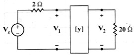

C06 DC analysis: Find gains of circuit containing one biport, given Y parameters
Question. Given the following circuit, find Gv, Gi, Gp and Zin. The parameters of biport are y11= 0.4, y12=-0.002, y21=-5 and y22=0.04.

Solution:
1) Label nodes and elements. Define a variable containing circuit description. I used this description:
"es,3,0,1; rs,3,1,2; rl,2,0,20; yp,1,2,0"-> cir
We use a source of 1 Volt, because it does not matter the value of the source. We could have used a symbolic source with value, say, Vs. Now store the values of parameters. Since we named the biport as yp, the variables we must store are yp11, yp12, yp21 and yp22.
0.4 -> yp11 : -0.002 -> yp12 : -5 -> yp21 : 0.04 -> yp22
2) Run the DC analysis tool.
sq\dc(cir)
After a while, the calculator displays...
Done
3) The values of voltages and currents are stored, just as any other simulation. You can get the gains by hand, or you can use the gain() tool:
sq\gain() The tool will ask you to input the values or expressions for in voltage (input v1), in current (input i1yp), out voltage (input v2) and out current (input i2yp). Then, the program calculates and displays the gains. These gains are also stored in variables that you can retrieve later. The program displays Gv as 55.6, Gi as-9.62, Gp as 534. It also displays Zin as 3.46 Ohms. Answer: The gains obtained are the right ones.